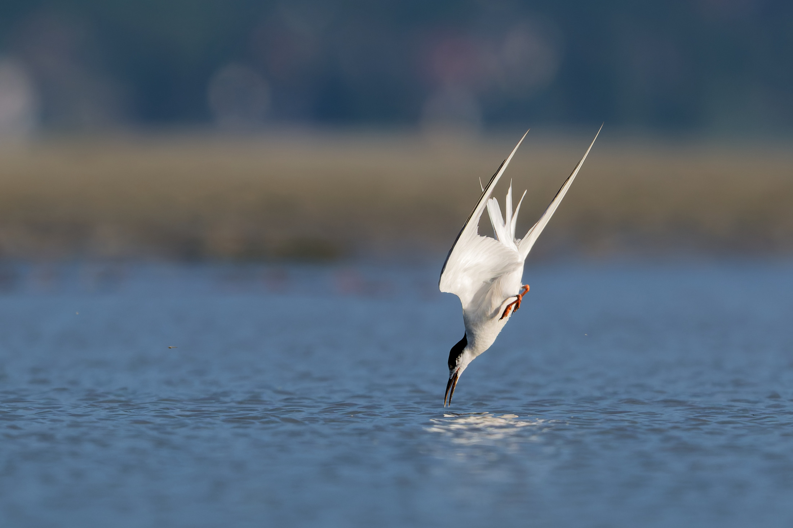
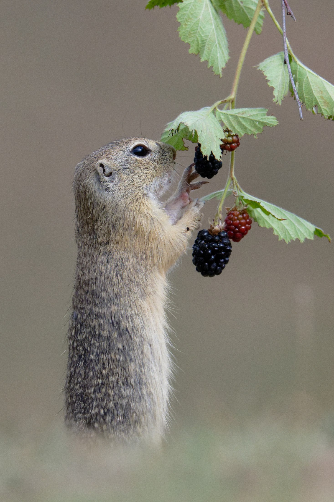
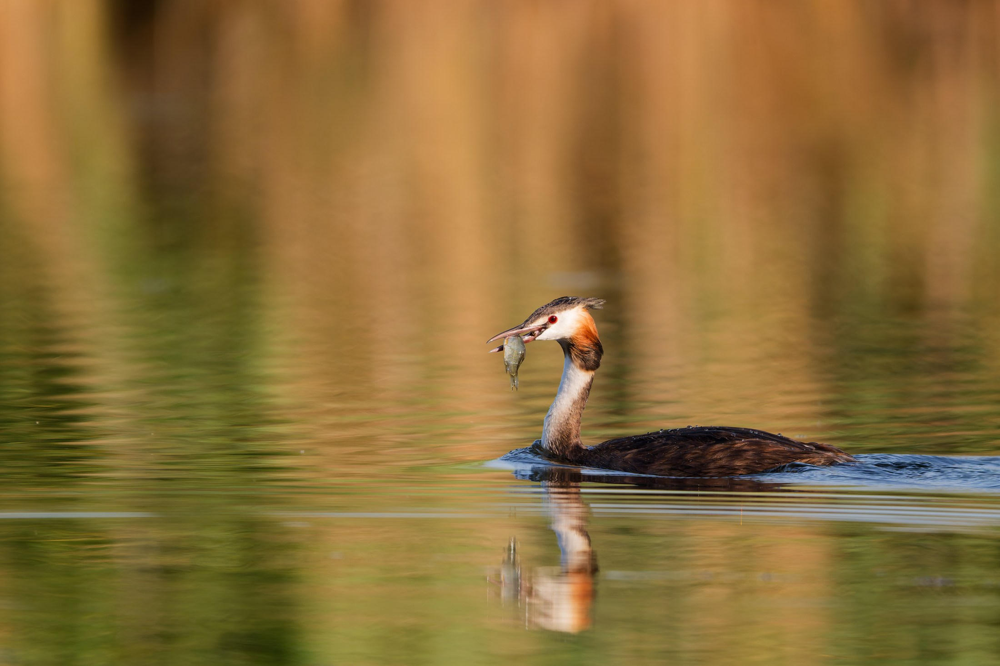
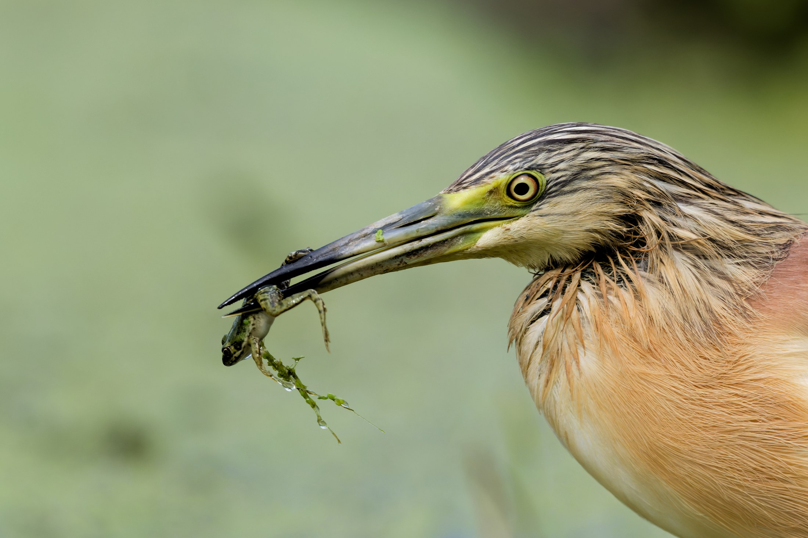
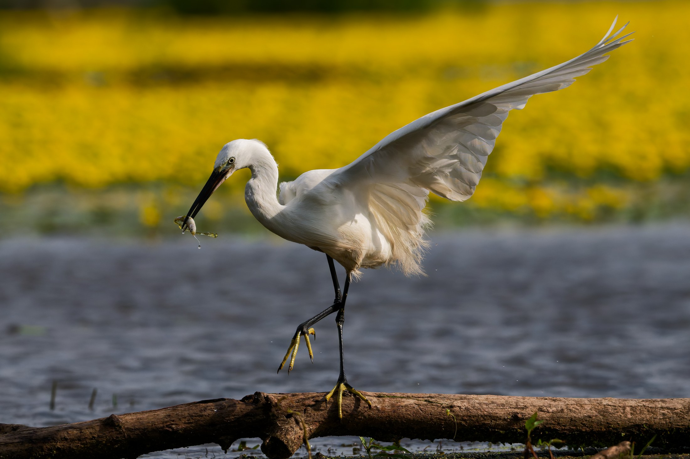
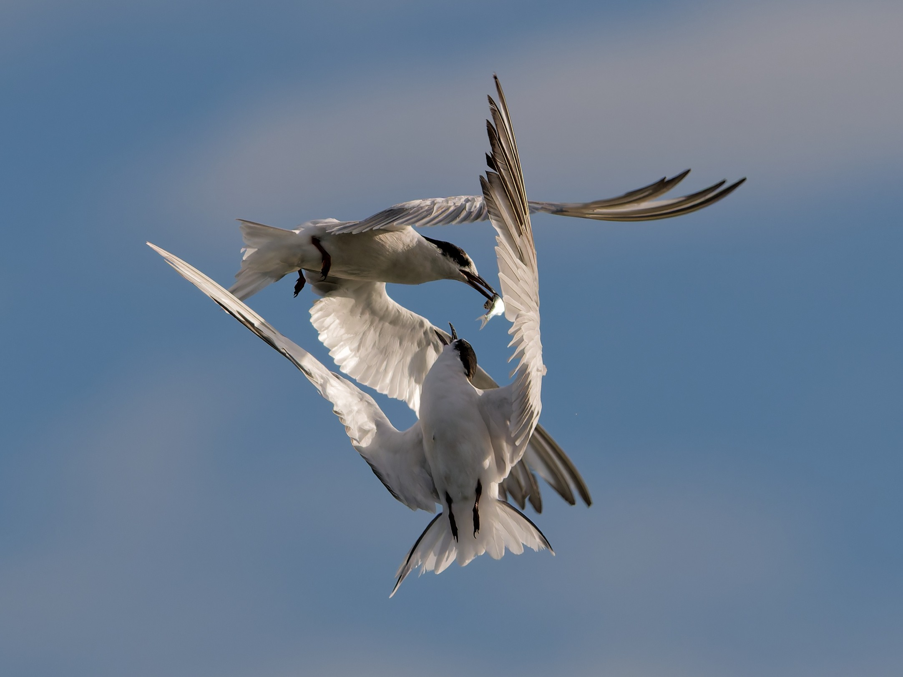
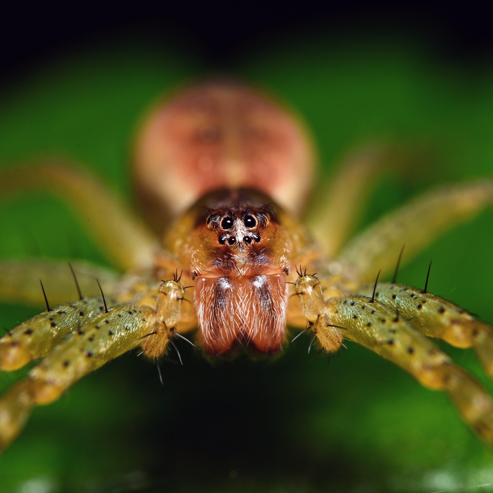

Gyurgyalag
Merops apiaster
Keresztben tartott szitakötő a csőrben, a két szárny tükrös keresztté nyílik, a faroktollak hosszan húznak utána. A háttér egyetlen meleg tónusú gyepfolt, semmi nem versenyez a madárral.
2026-07-23/ 16:44/ 600 mm · f/7,1 · 1/6400 s · ISO 1600
-
 2. tábla
2. táblaKarvaly
Accipiter nisus
Fürdő karvaly, bőrig ázva, mindkét szemével a lencsét tartja, miközben az imént felcsapott víz ívben áll meg a feje mögött. Mély árnyékba fényképezve, így a permet fényként rajzolódik ki a feketén.
2026-07-17/ 11:51/ 230 mm · f/5,6 · 1/4000 s · ISO 4000
-

3. táblaKüszvágó csér
Sterna hirundo
A csapás pillanata, amikor a csőr felszakítja a víztükröt — a szárnyak egyetlen nyílheggyé csukódnak, a lábak felhúzva, a madár saját fénye szétterül alatta a vízen. A túlpart teljesen életlenre engedve, így a fehér madár egyedül viszi a képet.
2026-09-03/ 07:28/ 600 mm · f/7,1 · 1/3200 s · ISO 720
-
 4. tábla
4. táblaKüszvágó csér
Sterna hirundo
Ugyanaz a madár tizennégy másodperccel később: a csapás után emelkedik ki a vízből, a szárnyak mély V-be nyílnak, a lábak még a felszínt nyomják, a felvert cseppek pedig megállnak a levegőben. Az ellenfény átvilágítja az evezőtollakat.
2026-09-03/ 07:28/ 600 mm · f/7,1 · 1/3200 s · ISO 720
-

5. táblaÜrge
Spermophilus citellus
A védett pusztai rágcsáló teljes magasságában kiegyenesedve húzza le magához a gyümölccsel teli ágat. Talajszintről fényképezve, így az állat függőlegesen rajzolódik ki a tiszta, távoli gyep előtt.
2026-07-24/ 09:32/ 490 mm · f/7,1 · 1/5000 s · ISO 1250
-
 6. tábla
6. táblaMezei nyúl
Lepus europaeus
Az első fény végigfut az oldalán, a bajusz és a fülek erezete hátulról átvilágítva, a száraz fű pedig egyetlen meleg tónusmezővé egyszerűsödik.
2026-08-02/ 06:48/ 440 mm · f/6,3 · 1/3200 s · ISO 1250
-

7. táblaBúbos vöcsök
Podiceps cristatus
Búbos vöcsök úszik át az arany tükrön, csőrében a frissen fogott hallal. A parti növényzet visszaverődő fénye egyetlen meleg sávvá mosódik össze mögötte, alatta pedig töretlen marad a madár tükörképe.
2026-08-16/ 08:36/ 600 mm · f/6,3 · 1/3200 s · ISO 900
-
 8. tábla
8. táblaJégmadár
Alcedo atthis
Zuhogó esőben, egyetlen csupasz ágon. A hosszabb záridő szálakká húzza az esőcseppeket, a madár közben mozdulatlan marad — a képnek ezúttal ugyanannyira tárgya az idő, mint maga a jégmadár.
2026-07-19/ 16:15/ 600 mm · f/7,1 · 1/125 s · ISO 360
-
 9. tábla
9. táblaDankasirály
Chroicocephalus ridibundus
A sekély vízi pihenőhely egyszerre kap szárnyra: minden madár a felszállás más fázisában, és egyik sem takarja a másikat. Az alacsony oldalfény elválasztja a szárnyak alját a túlparttól.
2026-09-05/ 07:24/ 600 mm · f/7,1 · 1/3200 s · ISO 400
-

10. táblaÜstökösgém
Ardeola ralloides
Üstökösgém közelről, a csőr hegyén hínárba csavarodott zsákmánnyal. A rozsdás-okker tollazat és a lágy zöld háttér ugyanabba a tónustartományba simul, a képet a sárga szem és a csőr éles vonala tartja meg.
2026-07-02/ 15:15/ 430 mm · f/6 · 1/16000 s · ISO 5000
-

11. táblaKis kócsag
Egretta garzetta
A rönkön végiglépkedő kis kócsag, csőrében a frissen fogott hallal: az egyik szárny teljes felütésben áll, a láb a lépés közepén emelkedik. Mögötte a vízinövények sárga sávja egyetlen tónusmezővé olvad össze.
2026-07-02/ 08:33/ 320 mm · f/6,3 · 1/13000 s · ISO 900
-

12. táblaKüszvágó csér
Sterna hirundo
Két csér a levegőben: a felső madár csőrénél a hal, az alsó fordulásból nyúl felé, a szárnyaik egymásba fésülődnek. A tiszta ég egyetlen halvány kék mezővé egyszerűsíti a hátteret, így a két test rajza viszi a képet.
2026-09-03/ 08:10/ 600 mm · f/7,1 · 1/3200 s · ISO 400
-
 13. tábla
13. táblaSzöcske (lárva)
Tettigoniidae
Szöcskelárva egy bimbó hegyén, a hosszú csáp ívben hajlik ki a képmezőből. A háttér egyetlen mély zöld felület, így a rovar teste és a bimbó bíbor csúcsa marad az egyetlen rajzolat.
2023-04-13/ 17:15/ 90 mm makró · 1/100 s · ISO 100
-

14. táblaHiúzpók
Oxyopidae
Szemből fényképezett hiúzpók: mindkét szemsor éles, a lábak tüskéi külön-külön kirajzolódnak, a potroh pedig életlenbe olvad — ettől kap mélységet a kép.
2023-07-24/ 07:33/ 90 mm makró · 1/100 s · ISO 100